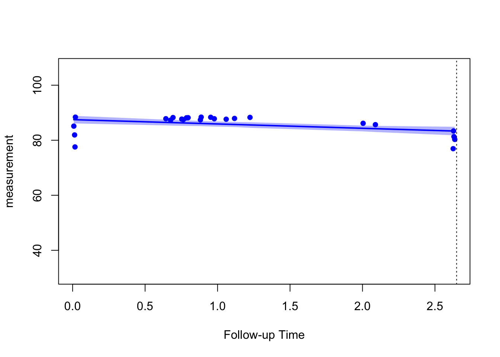
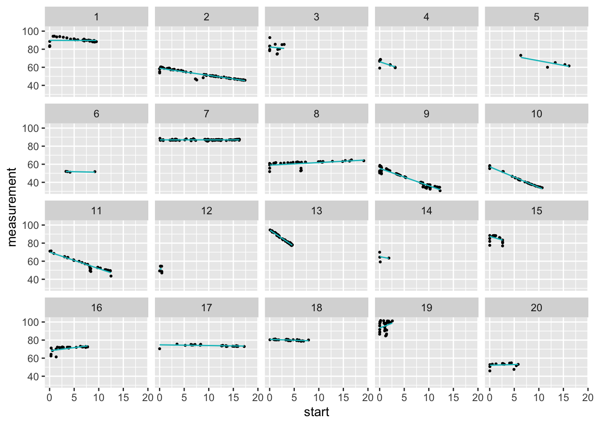

Last updated: 2023-06-16
Checks: 7 0
Knit directory: eGFRslopes/
This reproducible R Markdown analysis was created with workflowr (version 1.7.0). The Checks tab describes the reproducibility checks that were applied when the results were created. The Past versions tab lists the development history.
Great! Since the R Markdown file has been committed to the Git repository, you know the exact version of the code that produced these results.
Great job! The global environment was empty. Objects defined in the global environment can affect the analysis in your R Markdown file in unknown ways. For reproduciblity it’s best to always run the code in an empty environment.
The command set.seed(20230613) was run prior to running
the code in the R Markdown file. Setting a seed ensures that any results
that rely on randomness, e.g. subsampling or permutations, are
reproducible.
Great job! Recording the operating system, R version, and package versions is critical for reproducibility.
Nice! There were no cached chunks for this analysis, so you can be confident that you successfully produced the results during this run.
Great job! Using relative paths to the files within your workflowr project makes it easier to run your code on other machines.
Great! You are using Git for version control. Tracking code development and connecting the code version to the results is critical for reproducibility.
The results in this page were generated with repository version 7de25c8. See the Past versions tab to see a history of the changes made to the R Markdown and HTML files.
Note that you need to be careful to ensure that all relevant files for
the analysis have been committed to Git prior to generating the results
(you can use wflow_publish or
wflow_git_commit). workflowr only checks the R Markdown
file, but you know if there are other scripts or data files that it
depends on. Below is the status of the Git repository when the results
were generated:
Ignored files:
Ignored: .RData
Ignored: .Rhistory
Ignored: .Rproj.user/
Untracked files:
Untracked: analysis/04longitudinal.Rmd
Untracked: analysis/05survival.Rmd
Untracked: analysis/07extractSlopes.Rmd
Untracked: analysis/misc_performanceChecks.Rmd
Untracked: code/calculateEGFR.R
Untracked: code/extractSlopes.R
Untracked: code/flagAKI.R
Untracked: code/syntheticData.R
Untracked: data/simulated_longitudinal_data.csv
Untracked: data/simulated_metadata.csv
Untracked: output/eGFR_meta.csv
Untracked: output/eGFR_minimal.csv
Untracked: output/eGFR_minimal_surv.csv
Untracked: output/fitJMbayes.RDS
Untracked: output/flagged_episodes.csv
Untracked: output/longitudinal_data.csv
Untracked: output/pred_long.csv
Note that any generated files, e.g. HTML, png, CSS, etc., are not included in this status report because it is ok for generated content to have uncommitted changes.
These are the previous versions of the repository in which changes were
made to the R Markdown (analysis/06jointModel.Rmd) and HTML
(docs/06jointModel.html) files. If you’ve configured a
remote Git repository (see ?wflow_git_remote), click on the
hyperlinks in the table below to view the files as they were in that
past version.
| File | Version | Author | Date | Message |
|---|---|---|---|---|
| Rmd | 7de25c8 | Charlotte Boys | 2023-06-16 | Publish main parts of framework |
Now we finally come to modelling the eGFR slopes.
A useful reference is (A Tutorial for Joint Modeling of Longitudinal and Time-to-Event Data in R)[https://doi.org/10.5964/qcmb.2979].
Load necessary libraries:
Load the data:
eGFR_minimal <- read.csv("output/eGFR_minimal.csv")The jmbayes2::jm() function takes a
Surv_object, the object giving the time-to-event submodel,
and Mixed_objects, containing the longitudinal
mixed-effects model. Surv_object should be of the class
generated by coxph() or survreg() from the
survival package, and Mixed_objects should be
of the class generated by nlme::lme() or
GLMMadaptive::mixed_model(). Here, we use the
survival and nlme packages.
Note that in the joint modelling context we need to set
x = TRUE (or equivalently model = TRUE) in the
call of the coxph() function so that the design matrix used
in the Cox model is returned in the object fit.
By default, jm() adds the subject-specific linear
predictor of the mixed model as a time-varying covariate in the survival
relative risk model. In the output this is named as
value(y) to denote that, by default, the current value
functional form is used. That is, we assume that the instantaneous risk
of an event at a specific time \(t\) is
associated with the value of the linear predictor of the longitudinal
outcome at the same time point \(t\).
Construct the dataset for the time-to-event i.e. survival submodel:
eGFR_minimal <- eGFR_minimal[order(eGFR_minimal$patient_id, eGFR_minimal$start),]
eGFR_minimal_surv <- eGFR_minimal[!duplicated(eGFR_minimal$patient_id),]
eGFR_minimal_surv <- eGFR_minimal_surv %>%
dplyr::select(last_measurement_y, endpoint, disease, patient_id,
age_at_biopsy, sex )Fit the survival sub-model:
fitSURV1 <- survival::coxph(Surv(last_measurement_y, endpoint) ~
disease,
data = eGFR_minimal_surv,
x = TRUE,
model = TRUE)Select only the columns we need:
eGFR_minimal <- eGFR_minimal %>%
dplyr::select(measurement, disease, start, age_at_biopsy, patient_id,
last_measurement_y, endpoint)
knitr::kable(head(eGFR_minimal))| measurement | disease | start | age_at_biopsy | patient_id | last_measurement_y | endpoint |
|---|---|---|---|---|---|---|
| 83.08316 | B | 0.0054757 | 29 | 1 | 9.514031 | 0 |
| 82.96855 | B | 0.0191650 | 29 | 1 | 9.514031 | 0 |
| 88.61724 | B | 0.0273785 | 29 | 1 | 9.514031 | 0 |
| 83.85820 | B | 0.0301164 | 29 | 1 | 9.514031 | 0 |
| 94.30087 | B | 0.7091034 | 29 | 1 | 9.514031 | 0 |
| 94.39833 | B | 0.9637235 | 29 | 1 | 9.514031 | 0 |
Fit the longitudinal sub-model:
fitLME1 <- nlme::lme(fixed = measurement ~ 1 + start + disease + age_at_biopsy ,
data = eGFR_minimal,random = ~1 + start | patient_id)Fitting the joint model:
fitJMbayes1 <- JMbayes2::jm(Surv_object = fitSURV1,
Mixed_objects = fitLME1,
time_var = 'start')In practise, when fitting our models to real data, we have found the
need to increase the parameter n_iter e.g. to
n_iter = 11000L or n_iter = 30000L.
summary(fitJMbayes1)
Call:
JMbayes2::jm(Surv_object = fitSURV1, Mixed_objects = fitLME1,
time_var = "start")
Data Descriptives:
Number of Groups: 96 Number of events: 8 (8.3%)
Number of Observations:
measurement: 2685
DIC WAIC LPML
marginal 16537.85 136071.80 -22674.731
conditional 12958.15 12931.44 -6524.857
Random-effects covariance matrix:
StdDev Corr
(Intr) 8.3557 (Intr)
start 1.3858 -0.0800
Survival Outcome:
Mean StDev 2.5% 97.5% P Rhat
diseaseB -0.2714 0.9813 -2.2268 1.6075 0.7898 1.0067
value(measurement) -0.0546 0.0337 -0.1224 0.0128 0.1002 1.1495
Longitudinal Outcome: measurement (family = gaussian, link = identity)
Mean StDev 2.5% 97.5% P Rhat
(Intercept) 92.1088 2.4816 87.3292 97.0334 0.0000 1.0003
start -0.9382 0.1519 -1.2360 -0.6353 0.0000 1.0001
diseaseB 3.0596 1.7196 -0.3331 6.4248 0.0724 1.0006
age_at_biopsy -0.5042 0.0482 -0.5988 -0.4097 0.0000 1.0004
sigma 2.1205 0.0304 2.0621 2.1797 0.0000 1.0009
MCMC summary:
chains: 3
iterations per chain: 3500
burn-in per chain: 500
thinning: 1
time: 4 secUse the predict function to generate the fitted slope
from the joint model:
pred_long <- predict(fitJMbayes1, eGFR_minimal, process = 'longitudinal',
type = "subject_specific",
return_newdata = TRUE)We can plot for an individual patient using the plot
function:
plot(pred_long, subject = 15)
Plot for the first twenty patients in our cohort:
pred_long %>%
dplyr::filter(patient_id %in% 1:20) %>%
ggplot() +
geom_point(aes(x = start, y = measurement), size = .5) +
geom_line(aes(x = start, y = pred_measurement), color="#00BFC4", linewidth =.5)+
facet_wrap(~patient_id)
Save predictions for plotting and extracting slopes:
write.csv(pred_long, file = "output/pred_long.csv", row.names = FALSE)Save the model object:
saveRDS(fitJMbayes1, file = "output/fitJMbayes.RDS")
sessionInfo()R version 4.3.0 (2023-04-21)
Platform: aarch64-apple-darwin20 (64-bit)
Running under: macOS Monterey 12.4
Matrix products: default
BLAS: /Library/Frameworks/R.framework/Versions/4.3-arm64/Resources/lib/libRblas.0.dylib
LAPACK: /Library/Frameworks/R.framework/Versions/4.3-arm64/Resources/lib/libRlapack.dylib; LAPACK version 3.11.0
locale:
[1] en_US.UTF-8/en_US.UTF-8/en_US.UTF-8/C/en_US.UTF-8/en_US.UTF-8
time zone: Europe/Rome
tzcode source: internal
attached base packages:
[1] splines stats graphics grDevices utils datasets methods
[8] base
other attached packages:
[1] JMbayes2_0.4-0 GLMMadaptive_0.8-8 broom.mixed_0.2.9.4
[4] survival_3.5-5 nlme_3.1-162 lattice_0.21-8
[7] lubridate_1.9.2 forcats_1.0.0 stringr_1.5.0
[10] purrr_1.0.1 readr_2.1.4 tidyr_1.3.0
[13] tibble_3.2.1 ggplot2_3.4.2 tidyverse_2.0.0
[16] dplyr_1.1.2 workflowr_1.7.0
loaded via a namespace (and not attached):
[1] tidyselect_1.2.0 farver_2.1.1 fastmap_1.1.1 promises_1.2.0.1
[5] digest_0.6.31 timechange_0.2.0 estimability_1.4.1 lifecycle_1.0.3
[9] processx_3.8.1 magrittr_2.0.3 compiler_4.3.0 rlang_1.1.1
[13] sass_0.4.6 tools_4.3.0 utf8_1.2.3 yaml_2.3.7
[17] knitr_1.43 labeling_0.4.2 withr_2.5.0 effects_4.2-2
[21] nnet_7.3-19 grid_4.3.0 fansi_1.0.4 git2r_0.32.0
[25] xtable_1.8-4 colorspace_2.1-0 future_1.32.0 globals_0.16.2
[29] emmeans_1.8.6 scales_1.2.1 MASS_7.3-60 insight_0.19.2
[33] survey_4.2-1 cli_3.6.1 mvtnorm_1.2-1 rmarkdown_2.22
[37] generics_0.1.3 rstudioapi_0.14 httr_1.4.6 tzdb_0.4.0
[41] DBI_1.1.3 minqa_1.2.5 cachem_1.0.8 parallel_4.3.0
[45] mitools_2.4 matrixStats_1.0.0 vctrs_0.6.2 boot_1.3-28.1
[49] Matrix_1.5-4.1 jsonlite_1.8.5 carData_3.0-5 callr_3.7.3
[53] hms_1.1.3 listenv_0.9.0 jquerylib_0.1.4 glue_1.6.2
[57] parallelly_1.36.0 nloptr_2.0.3 codetools_0.2-19 ps_1.7.5
[61] stringi_1.7.12 gtable_0.3.3 later_1.3.1 lme4_1.1-33
[65] munsell_0.5.0 furrr_0.3.1 pillar_1.9.0 htmltools_0.5.5
[69] R6_2.5.1 rprojroot_2.0.3 evaluate_0.21 highr_0.10
[73] backports_1.4.1 broom_1.0.4 httpuv_1.6.11 bslib_0.4.2
[77] Rcpp_1.0.10 gridExtra_2.3 coda_0.19-4 whisker_0.4.1
[81] xfun_0.39 fs_1.6.2 getPass_0.2-2 pkgconfig_2.0.3